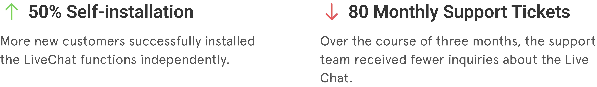

Product Onboarding
Customer Service | B2B2C
My Role
As the UX/UI Designer, I led the research, user experience, and visual aspects of the design. I worked closely with the PM, Marketing, Sales, and Support teams throughout the process.
Problem
The original onboarding slides for the free trial failed to effectively guide new customers, especially those without technical backgrounds. Many users couldn't install the LiveChat function on their own and needed help from the support team. Users rarely give products a second chance if they struggle with them during their first experience.


The Solution
Interactive step-by-step guide to set up the LiveChat service
The primary goal for new customers who sign up for the free trial was to test out the LiveChat function. After signing up, we provided them with a focused setup view that guided them through a few simple steps to input the necessary information.

Using graphic instructions
The original slides showed ambiguous illustrations and technical jargon. We replaced these with clear, informational graphic instructions that were both intuitive and engaging for users.

Product tour for individual features
After installation, users landed on the system page. We provided an interactive product walkthrough and guided them on how to personalize the LiveChat widget—similar to experiencing an in-person product demonstration.

Getting help without leaving the product
When users needed to learn more, they could quickly access the help center through a dedicated in-app window for immediate support.

Outcome
We worked closely with the sales and support teams to continuously monitor how many new customers installed LiveChat independently and the number of inquiry tickets regarding installation on Jira.
More Projects